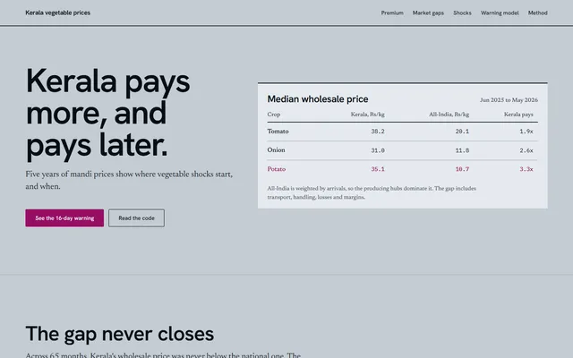
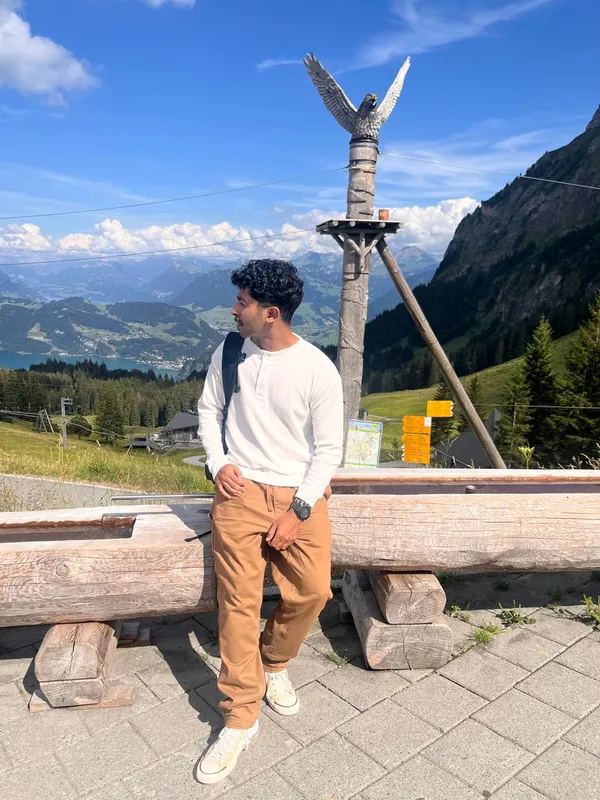
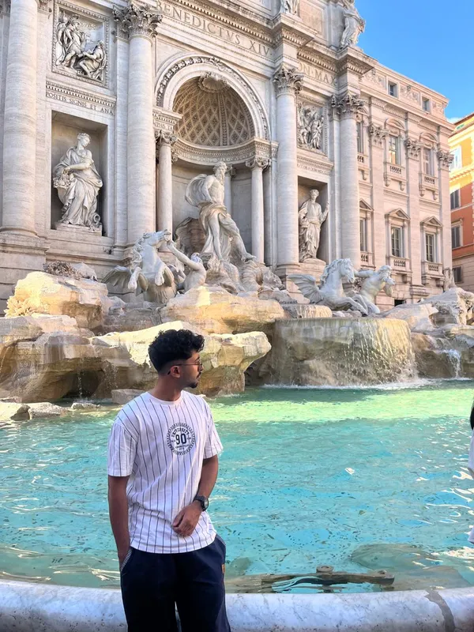

26.5M
Read the market.
Wholesale records from Kerala and across India reveal price gaps and show how a spike can travel between markets.
Kerala Vegetable PricesBased in
Thrissur, India
Data Analysis &
Machine Learning
I’m Joe, an AI student in Thrissur. I build data tools that make it easier to see what happened, test what might happen next, and check the evidence yourself.
More about meExplore three projects through models you can turn, then open the case studies for the results.
Market signals

Project screenshot. Open 3D to turn the illustrative model.
26.5M
Wholesale records from Kerala and across India reveal price gaps and show how a spike can travel between markets.
Kerala Vegetable Prices110M
A tested SQL warehouse turned e-commerce events into business findings and revealed a 48-hour gap in purchase tracking.
Retail Analytics Lab150
IntentDesk tested 150 known intent categories and routes model suggestions to a human reviewer.
IntentDeskI'm Joe Kanjirathingal, an Artificial Intelligence student based in Thrissur, Kerala.
I like taking an idea all the way from a notebook to something people can explore. My projects span Power BI and SQL analysis, NLP, model evaluation, public-data dashboards and full-stack web applications.
I'm completing my B.Tech at Vidya Academy of Science and Technology and taking Python full-stack training at SMEClabs, Kochi.
I'm looking for Data Science, Machine Learning and Data Analyst internships where I can contribute, ask better questions and learn from an engineering team.
More about me on LinkedIn

scikit-learn · PyTorch
NLP · Embeddings · Retrieval
Model evaluation · Calibration
Power BI · DAX · Excel
Python · SQL · DuckDB · pandas
ETL · Statistics · Dashboards
FastAPI · SQLite
React · TypeScript
PostgreSQL · GitHub · Vercel
The foundations behind the projects.
Vidya Academy of Science and Technology
September 2023 – March 2027SMEClabs, Kochi
Professional training alongside my degree